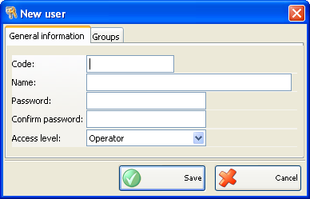
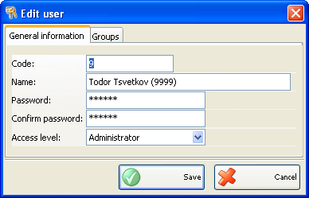
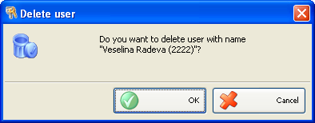

Adaugare, editare si stergere utilizatori
Puteti adauga utilizatori in lista de Utilizatori in fereastra Utilizatori noi.

Click pe �tabul� Informatii generale pentru introducerea informatiilor de baza: cod, nume, patola, confirmare parola si nivel acces.
Primul utilizator care va fi adaugat in lista va primi automat nivelul de acces maxim (Patron). Nivelul de acces pentru alti utilizatori poate fi selectat din lista de nivel acces predefinita: operator, manager, administrator sau patron.
Se pot edita parametrii utilizatorului in fereastra Editare utilizator.

Pentru stergerea unui articol din lista, selectati linia corespunzatoare din lista (tabel) si click pe butonul Sterge sau apasati tasta� Delete.
Confirmati stergerea in partea de sus a ferestrei pentru a completa actiunea.
�2006-2012 Microinvest, All rights reserved